#221 Die Geisha
Alternativ: Memoirs of a Geisha
Auszeichnungen: 3 Oscars gewonnen für 3 Oscars nominiert 1 GoldenGlobes gewonnen 1 BAFTA-Awards gewonnen

 IMDB-Wertung: 7.4 / 10
IMDB-Wertung: 7.4 / 10  Metascore: 54
Metascore: 54 
Die Geschichte der kleinen Chiyo führt uns in die geheimnisvolle und exotische Welt Japans vor dem Zweiten Weltkrieg: Als Kind einer mittellosen Fischerfamilie wird Chiyo als Hausmädchen an ein Geisha-Haus verkauft. Und obwohl ihr die intrigante Geisha des Hauses das Leben zur Hölle macht, blüht Chiyo auf und entwickelt sich vom gewöhnlichen Hausmädchen zur legendären Geisha Sayuri.\r Die mächtigsten Männer Japans legen der schönen und gebildeten Sayuri zu Füßen, doch heimlich liebt sie den einen Mann, der ihr versagt bleibt...
Jahr: 2005
Dauer: 145 Minuten
FSK: 12
Land: USA Studio: Columbia PicturesTonspuren: DD5.1 - ,
Untertitel:
Auflösung: 1080p (1920×800) Größe: 8304 MB
Genre: Drama, Liebe
Regisseur:  Rob Marshall
Rob Marshall
Drehbuch: Robin Swicord, Arthur Golden
Soundtrack: John Williams
Darsteller:
- Suzuka Ohgo als Chiyo
 Togo Igawa als Tanaka
Togo Igawa als Tanaka Mako als Sakamoto
Mako als Sakamoto- Samantha Futerman als Satsu
- Elizabeth Sung als Sakamoto's Wife
- 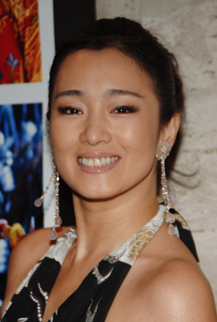 Li Gong als Hatsumomo
- 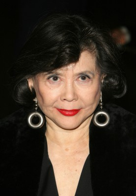 Tsai Chin als Auntie
 Kaori Momoi als Mother
Kaori Momoi als Mother- Zoe Weizenbaum als Young Pumpkin
- Karl Yune als Koichi
- 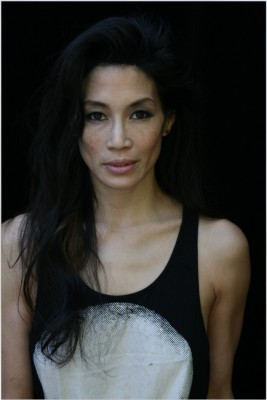 Eugenia Yuan als Korin
 Michelle Yeoh als Mameha
Michelle Yeoh als Mameha- 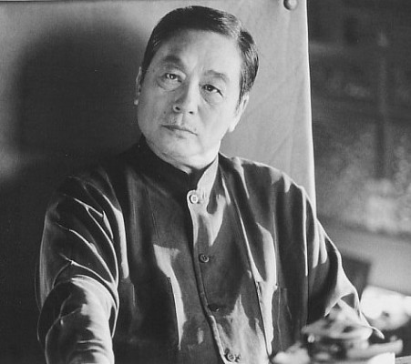 Kenneth Tsang als The General
 Ken Watanabe als Chairman
Ken Watanabe als Chairman- Navia Nguyen als Izuko - Geisha in Green
- Natsuo Tomita als Geisha in Lavender
- 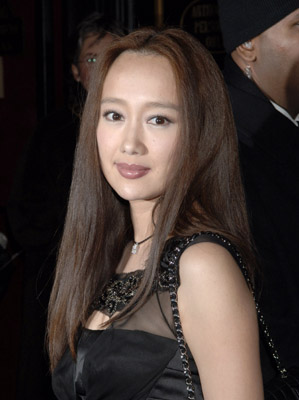 Yûki Kudô als Pumpkin
 Ziyi Zhang als Sayuri
Ziyi Zhang als Sayuri- 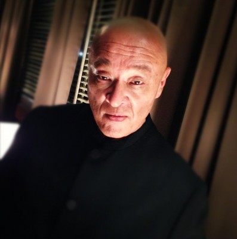 Cary-Hiroyuki Tagawa als The Baron
- 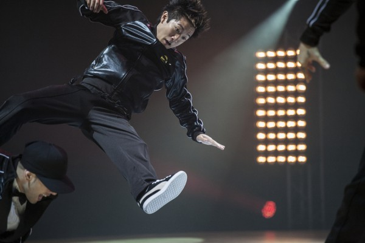 Steve Terada als Boy on Bike
- Laura Miro als Yukimoto Teahouse Geisha / Spring Festival Dancer
- 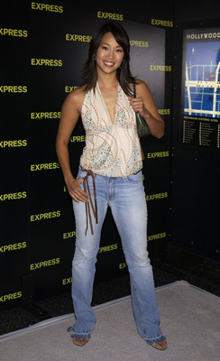 Diane Mizota als Yukimoto Teahouse Geisha / Spring Festival Dancer
- 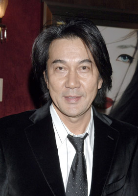 Kôji Yakusho als Nobu
 Randall Duk Kim als Dr. Crab
Randall Duk Kim als Dr. Crab- 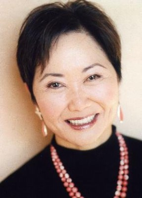 Takayo Fischer als Tanizato Teahouse Owner
- Nobu Matsuhisa als Kimono Artist
- James Taku Leung als Kimono Factory Worker
- Chad Cleven als Drunken G.I.
- Cameron Duncan als Drunken G.I.
 Ted Levine als Colonel Derricks
Ted Levine als Colonel Derricks- 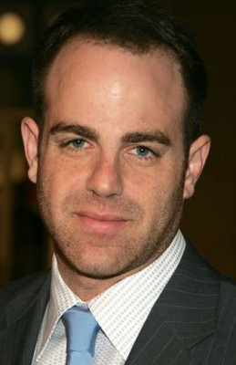 Paul Adelstein als Lieutenant Hutchins
- Mitsuyo Miyazaki als Spring Festival Dancer
- 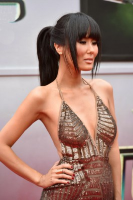 Minae Noji als Spring Festival Dancer
- Chieko Hidaka als Festival Rehearsal Dancer
- Nikki Tuazon als Festival Rehearsal Dancer
- La Na Shi als Student Dancer
- Masakazu Yoshizawa als Shamisen Musician
- Jennie Baek als Geisha , uncredited
- Michael Chen als Rickshaw Driver , uncredited
- 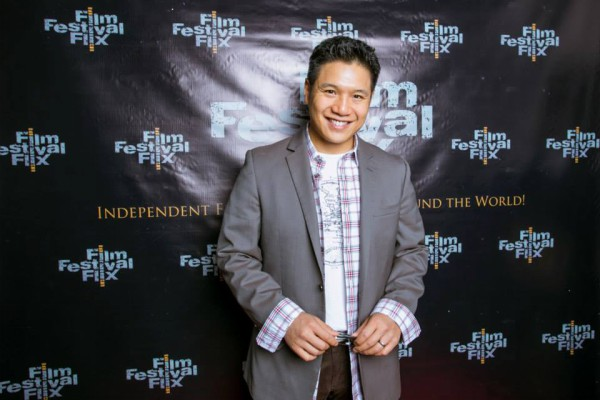 James Huang als Spa Worker , uncredited
- Eiji Inoue als (uncredited
- Branden Weslee Kong als Rickshaw Driver , uncredited
- Jon Liggett als Drunken G.I. , uncredited
- Julia Ling als Spring Festival Dancer , uncredited
- Tohoru Masamune als Radio Announcer , uncredited
- Danton Mew als Takamaya Towel Servant , uncredited
- Ryan Moriarty als Teahouse Patron , uncredited
- Tam Nguyen als Maiko , uncredited
- Sophie Oda als Kimono Factory Worker , uncredited
- Ricky Pak als Spa Patron , uncredited
Datei: X:\2005(G-M)\Geisha, Die (2005, FSK12, 1920x800).mkv seit 14.02.2015
Festplatte: HD 2005(G-Z)-2006(A-Z)
 Es gibt insgesamt 46 Filme in der Gruppe '2005(G-M)'
Es gibt insgesamt 46 Filme in der Gruppe '2005(G-M)'